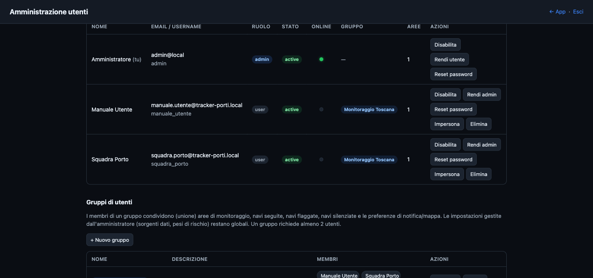
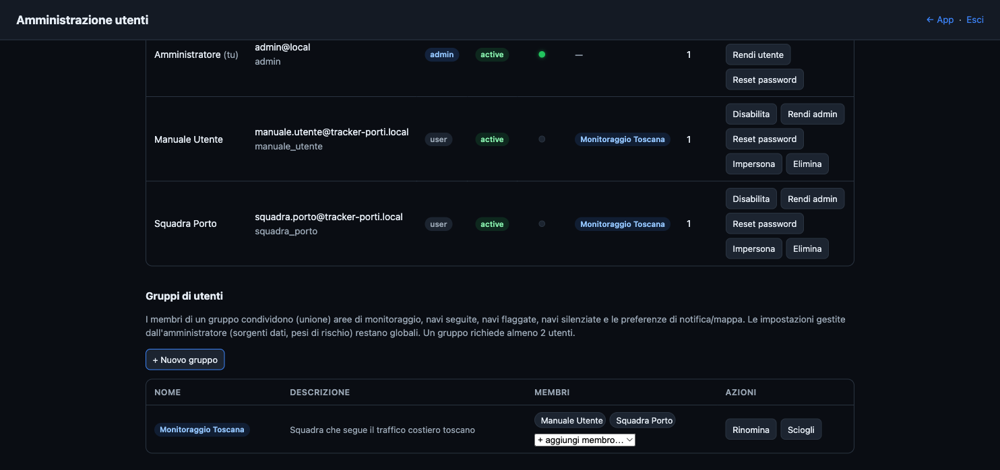
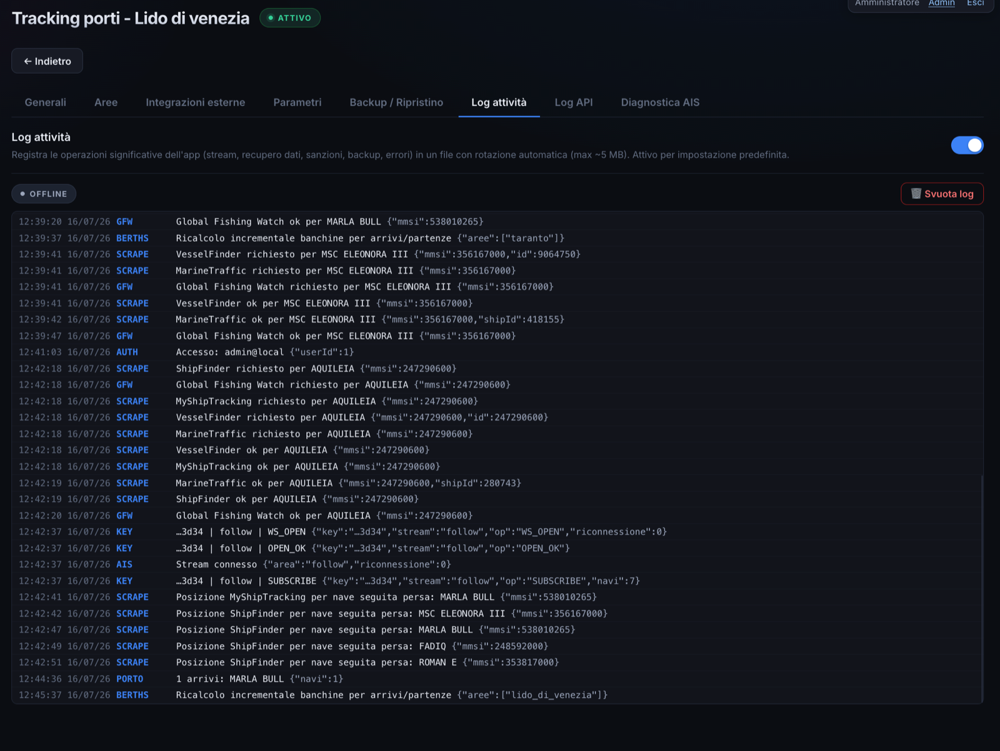
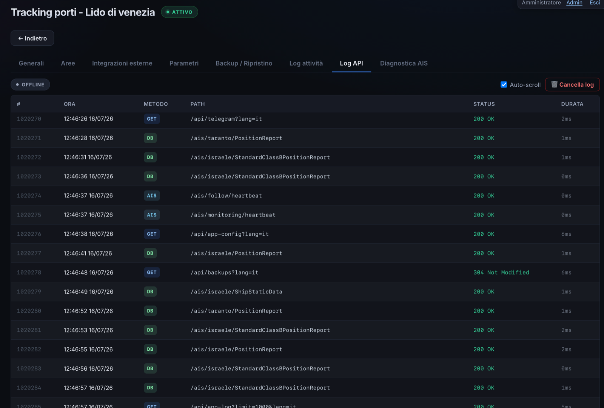
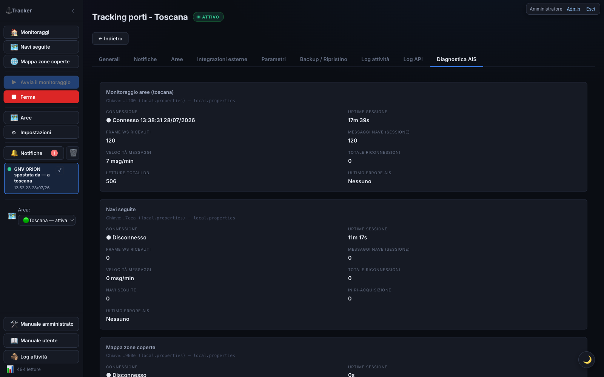
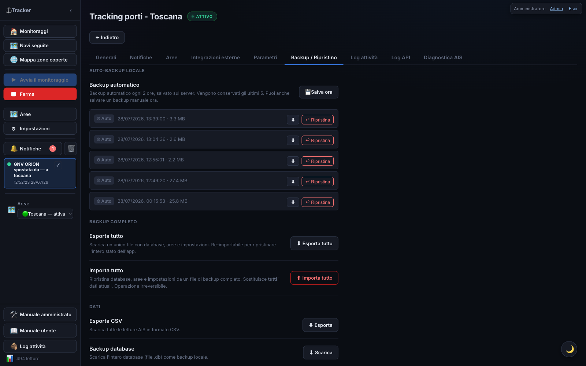

Administrator Manual — Tracker Porti
🇮🇹 Manuale in italiano: manuale_admin.md · index.html
Guide to the functions reserved for Tracker Porti administrators: user and group management, coverage-map controls, risk model, system logs, and editing configuration files.
This manual complements the User manual, which covers day-to-day use of the app. Here you’ll find only what is reserved for administrators. For common features (monitoring, followed ships, ship detail, notifications, export…) refer to the user manual.
Administrator role

Administrators see the Admin link at the top
right, which opens the administration page
(/admin). An administrator can:
- approve pending new registrations;
- enable or disable an account;
- change a user’s role (regular user ↔︎ administrator ↔︎ tester);
- reset a user’s password — generates a one-time link (valid 24 hours) to hand to them;
- delete a user;
- create and manage user groups (see below);
- impersonate a user — view their areas, monitoring, and followed ships in read-only mode, with a prominent banner and one-click exit;
- consult the logs (activity log and API log), shared and visible only to administrators.
Actions on a user row
Each table row shows at most one highlighted button — the one that row is waiting for: Approve for a pending registration, Re-enable for a disabled account. Everything else lives in the ··· menu at the end of the row, always in the same order:
- status — Approve / Approve as tester / Disable / Re-enable;
- role — Make administrator, Revoke administrator, or Promote to user (for a tester account);
- utilities — Reset password, Impersonate;
- destructive action — Delete user (in red, with confirmation).
From tester to regular user
The tester role is only assigned at approval time, with Approve as tester: it is an account with reduced limits (number and size of areas, number of followed ships) meant for trials.
When you want to lift those limits, open the ··· menu on the user’s row and choose Promote to user: the account becomes a regular user, with no tester limits, keeping the areas, followed ships and settings already configured. The move can only be reversed through a new approval, so the tester role cannot be re-assigned to an account that has been promoted.
Settings managed by administrators (data sources, sanctions/PSC screening, risk-score weights) are global for all users. In the Settings interface, the tabs and toggles reserved for administrators are hidden from regular users (and protected server-side regardless).
User groups

An administrator can put several users into a group. When a user is part of a group, they share with the other members (as a union of what each one had):
- monitoring areas;
- followed ships, flagged ships ★, and muted ships 🔕;
- notification preferences (app and Telegram) and map display, plus the default area.
In practice: if one member adds an area, follows a ship, or enables a notification, the other members get it on their next visit — and vice versa (write-through sync). What stays personal to each user: the Telegram link (their own chat) and the interface language.
Management (from the Admin page): a group has a name, a description, and at least 2 members. On creation you choose the template user whose settings the group starts from. You can add/remove members or dissolve the group.
A removal that would leave only 1 member is blocked: in that case, dissolve the group instead. If an administrator removes a user from a group, that user keeps everything that was shared up to that point (areas, ships, settings): they simply stop syncing with the others.
Group activity log: every write-through
share is also recorded (who, when, what) — members review it
themselves in the Group
activity section (visible to anyone in a group, no admin
action needed). Rows older than
GROUP_ACTIVITY_LOG_RETENTION_DAYS days (default 90,
in app.config.properties) are deleted
automatically.
Coverage map — administrator controls

The Coverage
map is visible read-only to all users (and even without
login at /heatmap). Only
administrators can additionally:
- start and stop data collection (Start/Stop collection buttons);
- see real-time connection statistics (bandwidth used, messages per second, populated cells…);
- Refresh map and Clear data (empties the collected grid).
How collection works: once started, it runs in the background on the server — even if no one has the page open — until an administrator stops it. It resumes on its own after a server restart. As a safety measure, it automatically shuts off if no user has been active for 10 minutes.
Warning: while collection is active, the app downloads data from the whole world continuously (roughly 200–400 MB per hour). The feature requires an AISStream key from a separate account (different from the one used for regular monitoring), set in
local.propertiesasHEATMAP_AIS_API_KEY. Without that key, the feature stays off.
Area ports
On the 🗺 Areas screen, admin-only (the panel doesn’t show up at all for regular users), each area row can be expanded into a list of the ports discovered for that area.
For each port found, the panel shows:
- its name;
- a status badge: 🟢 Confirmed, 🟡 Needs review, 🔴 Rejected;
- the sources that found it
(e.g.
berths,wpi,locode,vf); - for Needs review ports, two buttons — Confirm / Reject; a port that’s already been decided (Confirmed or Rejected) instead shows the opposite action’s button, so you can correct an earlier decision at any time;
- a Search ports now button, to manually re-run discovery.
What the statuses mean:
- Confirmed: either it’s a berth already observed for real (a cluster of moorings the AIS detected for that area — in this case no external source is even contacted: the observed berth is the port), or at least two independent sources (among World Port Index, UN/LOCODE and VesselFinder) found the same geographic point.
- Needs review: only one source found it — awaiting an admin to confirm or reject it with the two dedicated buttons.
- Rejected: an admin explicitly discarded it (e.g. a false positive). Once a decision is made (confirmed or rejected), a later discovery run never overwrites it — only ports still “Needs review” can change status automatically on each new run.
Note: Global Fishing Watch is not a usable source today for this feature — its anchorages dataset isn’t reachable via API (only a separate, non-integrated download portal exists). It remains a candidate in the code, ready to re-activate if GFW opens access. The sources actually active today are World Port Index, UN/LOCODE and VesselFinder.
When discovery runs:
- Automatically, when a new area is created.
- In the background at server restart, one time only, for existing areas that don’t have discovered ports yet (one area at a time, with a pause between each, so it doesn’t slow down startup).
- On demand, with the Search ports now button: runs again in the background — on an area with no berths observed yet it can take a few minutes. The panel re-fetches once, right after the click, so it will almost always still show the previous state: there’s no progress indicator and no automatic refresh afterwards — to see the outcome, click Search ports now again (or reopen the Areas screen) after a few minutes.
Risk model (signal weights)
Besides the cargo-type weights (editable by everyone in Settings), administrators can adjust how many points each risk signal is worth (AIS blackout, spoofing/position jump, dwell, draught increase, sanctions, PSC, GFW events, rendezvous, etc.) from ⚙ Settings → “⚖ Risk model” section.
- A grid with one field per signal: change the values and press 💾 Save weights. Immediate effect, no restart needed. Reset to default restores factory values.
- Setting a weight to 0 disables that signal.
- You can save full configurations as risk profiles (Risk profile menu → Save as…) and recall them with Apply — useful for quickly switching between different setups (e.g. a more aggressive profile, or one tuned for areas with poor AIS coverage).
Detection thresholds and signal multipliers are not in the UI: they stay in the
app.config.propertiesfile (RISK_*keys).
The Settings General tab, “⚖ Risk model” section, also has two toggles reserved for administrators (invisible to other users):
- Exclude tankers — doesn’t assign the “ship type” score to tanker hulls (AIS code 80–89). Useful when monitoring weapons transport, which a tanker can’t carry out: it only zeroes that one factor, not the whole score (a tanker can still land in the red band from other signals — sanctions, AIS dark, etc.). It’s a global value shared by every user, and different from the notifications’ ship-type filter (Settings → Notifications, personal to each user): that one only decides what reaches you as a notification, without touching the score.
- Check position jump / Check AIS blackout — include those signals in the score. Disable them in areas with poor AIS coverage, where sparse reports produce false positives (apparent jumps/gaps that aren’t real).
System logs
Logs are shared and visible only to administrators, as tabs in Settings.
Activity log

Records the app’s significant operations (streams, data fetching, sanctions, backups, errors) in a file with automatic rotation (max ~5 MB). On by default (Activity log toggle in the General tab, admin). The log can also be viewed from the 🪵 Activity log overlay in the sidebar and can be cleared.
The log also records the area-change notifications
discarded by the filters
(Area change not notified: …) with the reason:
overlapping areas, only crossed,
call too old. That is where to look when a user
reports a missing alert they expected — see the
AREA_CHANGE_* parameters in app.config.properties.
API log

Lists the application’s API calls in real time (method, path, status, time), useful for diagnostics. Sensitive request bodies (login, etc.) are suppressed: passwords are never logged.
AIS diagnostics

The ⚙ Settings → AIS Diagnostics tab (visible only to administrators) shows the active area’s data stream connection status, refreshed every 5s:
- Connection — Connected / Disconnected
- Session uptime — how long the stream has been active
- WS frames received / Ship messages / Message rate
- Reconnections — how many times the connection was restored
- Last error — the most recent error, if any
The AIS outage banner shown to all users on monitoring pages when an area goes quiet for a long time is described from the user’s perspective in the user manual; the external-confirmation mechanism behind it is in the Credits section below.
Fallback mode
If the AIS outage lasts more than 6 hours
(configurable threshold, AIS_FALLBACK_HOURS — see
Editing configuration
files), the app automatically enters fallback
mode: instead of relying only on the AIS feed, it
relocates ships via scraping on ShipFinder and
MyShipTracking (the only two external sources
that provide coordinates), to keep a minimum level of monitoring
during a prolonged outage.
Fallback mode always starts in the safest scope, “followed ships only”: to widen it, or switch back, use the two buttons at the bottom of the ⚙ Settings → AIS Diagnostics panel (same tab described above, always available even outside an outage). While fallback mode is active a dedicated 🔀 Fallback mode entry also appears in the sidebar (administrators only), jumping straight to this panel from any screen:
- Status — active/not active, since when, current session’s duration, current scope (“followed ships only” or “full monitoring”).
- Real scrape history — a separate bar chart for ShipFinder and MyShipTracking (no longer summed together), last 48 hours, with stacked green/red bars for succeeded/failed requests and hour labels every 6 hours — hover a bar for the exact breakdown.
- Scope comparison estimate — two bars
showing how many requests/hour each scope would take (“followed
ships only” vs. “full monitoring”), next to the real history:
before widening the scope you can see concretely how much the
scrape volume would rise, instead of choosing blind. Widening
the scope does not raise the hourly request cap
(
FALLBACK_MAX_REQ_PER_HOUR) — it only redistributes it over more ships, each then revisited less often. - Circuit-breaker status and session problems — if ShipFinder or MyShipTracking show too many 403/429 errors in a short window (a possible sign of blocking), that source is automatically paused for a while; here you see whether it’s paused and until when, plus a counter of how many suspected blocks happened this session per source — it stays visible even after the block resolved itself, instead of disappearing the moment the source recovers.
If a source is paused for suspected blocking, you get a dedicated alert — administrators only — via in-app notification, Telegram (toggle in Settings → External integrations → Telegram, “suspected ban” entry) and a hint in the AIS-outage banner while logged in as an admin. Fallback mode exits on its own once AIS has been continuously stable for a while (20 minutes by default), to avoid repeatedly switching on and off over a short interruption.
A server restart (e.g. after a deploy) in the middle of an outage doesn’t lose this state: the banner and any already-active fallback mode resume immediately, without having to wait again for the silence period needed to reconfirm the outage.
Editing configuration files
Some advanced settings aren’t in the interface but in text
files in the project folder. Open them with a text editor,
change the values, and restart the application
to apply them. Lines starting with # (or
//) are comments and are ignored.
local.properties
— keys and secrets
Contains the API key and initial preferences. Format
KEY=value, one per line. Must not be
shared (it contains the API key) and is in
.gitignore. If it doesn’t exist, copy it from
local.properties.example.
| Key | Meaning |
|---|---|
AIS_API_KEY |
AISStream.io key (required) — used by the monitoring areas’ streams |
FOLLOW_AIS_API_KEY |
AISStream.io key for the followed ships
stream. Best from a separate account (see
note). Empty = reuses AIS_API_KEY |
HEATMAP_AIS_API_KEY |
Key of a separate AISStream account, used only for the Coverage map. Empty = feature disabled. Must be written “bare”, with no comments on the same line |
BBOX_PRESET |
Area shown at startup (an area’s key,
e.g. bari) |
IMPORT_VF_DATA /
IMPORT_MT_DATA |
true/false — enable VesselFinder /
MarineTraffic import |
IMPORT_SF_DATA |
true/false — ShipFinder import +
position to re-locate lost followed ships |
IMPORT_MST_DATA |
true/false — MyShipTracking import
(second, independent backup position source) |
IMPORT_SANCTIONS |
true/false — screening against the
OFAC SDN list |
IMPORT_SANCTIONS_EXTRA |
true/false — EU / UK OFSI / UN
lists (only with IMPORT_SANCTIONS); default
true |
IMPORT_PSC |
true/false — Port State Control
screening (Paris/Tokyo MoU flags + banned ships) |
IMPORT_EQUASIS |
true/false — on-demand Equasis
lookup in the ship detail |
EQUASIS_USER /
EQUASIS_PASSWORD |
Equasis account credentials (free registration at equasis.org) |
IMPORT_GFW |
true/false — Global Fishing Watch
enrichment; default true |
GLOBAL_FISHING_WATCH_TOKEN |
Global Fishing Watch API (Bearer) token. Data free for non-commercial use only |
ADMIN_USERNAME / ADMIN_EMAIL /
ADMIN_PASSWORD |
Default administrator (created at startup if missing).
ADMIN_PASSWORD is required: if it
isn’t configured and no admin exists yet, startup stops with an
error instead of creating an account with a weak password.
Change the password on a server reachable by
others |
COOKIE_SECURE |
true/false — sends the session
cookie only over HTTPS; set to true behind TLS |
SESSION_TTL_DAYS |
Login session length in days. Default 30 |
💡 Recommended: three keys from three separate AISStream accounts. AISStream limits connections per account, not per key. The app opens three independent streams — area monitoring (
AIS_API_KEY), followed ships (FOLLOW_AIS_API_KEY), and coverage map (HEATMAP_AIS_API_KEY). If two use keys from the same account, they compete for the same slot and one keeps getting rejected. Give each feature a key from a dedicated account.
app.config.properties
— operating parameters

Contains thresholds and parameters (time windows, radii,
retention, berths, score weights). Format
KEY=value, each parameter documented by a comment
in the file. You can also edit them from the
interface at ⚙ Settings → Parameters
(more convenient). Either way, you need to restart the
server to apply them (read only at startup).
Examples:
| Key | Meaning | Default |
|---|---|---|
SOG_FERMA_KN |
Speed (knots) below which a ship is “stationary” | 0.5 |
ACTIVE_WINDOW_HOURS |
Hours a moving ship stays among the “current” ones | 6 |
PORT_WINDOW_HOURS |
Hours a ship in port stays among the “current” ones | 24 |
POLL_INTERVAL_MS |
Interface refresh interval (ms) | 300000 |
AIS_OUTAGE_CHECK |
Enables AIS outage detection | true |
AIS_OUTAGE_SILENCE_MIN |
Minutes without signals before querying the uptime monitor | 10 |
AIS_UPTIME_SELFHOST_URL |
URL of your own self-hosted uptime monitor instance (queried first) | (empty) |
AIS_UPTIME_URL |
URL of the public uptime monitor, used as a fallback | https://aisuptime.buttermilkgreen.fyi |
AIS_FALLBACK_HOURS |
Hours of AIS outage before entering fallback mode | 6 |
AIS_FALLBACK_EXIT_GRACE_MIN |
Minutes of stable service before exiting fallback mode | 20 |
FALLBACK_MAX_REQ_PER_HOUR |
Max requests/hour (ShipFinder+MyShipTracking combined) in fallback mode | 90 |
FALLBACK_CIRCUIT_TRIP_COUNT |
403/429 failures (across distinct ships) that pause a source | 5 |
FALLBACK_CIRCUIT_TRIP_WINDOW_MIN |
Time window for counting those failures | 10 |
FALLBACK_CIRCUIT_COOLDOWN_MIN |
Minutes a source stays paused after a suspected block | 30 |
MAX_READINGS_PER_TYPE |
Maximum readings kept per message type | 10000 |
BERTH_CLUSTER_EPS_M |
Mooring-to-berth clustering radius (meters) | 80 |
BERTH_MIN_PTS |
Minimum nearby moorings to form a berth | 3 |
BERTH_MIN_MOORINGS |
Minimum moorings before characterizing a berth | 10 |
BERTH_DOMINANT_PCT |
Percentage a category must exceed to name the berth | 60 |
BERTH_RECOMPUTE_MIN |
Minutes between one automatic berth recomputation and the next | 30 |
HEATMAP_GRID_DEG |
Coverage map cell size, in degrees (~28 km) | 0.25 |
HEATMAP_FLUSH_SEC |
How often (seconds) counts are written to disk | 10 |
GROUP_ACTIVITY_LOG_RETENTION_DAYS |
Retention (days) of the group activity log (see above) | 90 |
TRANSIT_STOP_MIN_H |
Minimum hours in an area for a visit to count as a call rather than a mere crossing (transit-area search and area-change notification) | 3 |
TRANSIT_STOP_MAX_SOG_KN |
Minimum observed speed below which the ship counts as genuinely stopped (recent visits only, whose positions are still stored) | 0.5 |
TRANSIT_MIN_KN |
Minimum implied average speed of a direct passage between two areas: below it, the elapsed time counts as too long | 4 |
TRANSIT_MIN_SLACK_H |
Floor of the time limit, so nearby areas are not penalised | 12 |
TRANSIT_MAX_GAP_DAYS |
Cap of the time limit, whatever the distance | 30 |
TRANSIT_MAX_ROWS |
Maximum ships returned by one transit-area search | 500 |
AREA_CHANGE_REQUIRE_STOP |
Fire the area-change notification only if the ship called at the origin area | true |
AREA_CHANGE_REQUIRE_PLAUSIBLE_TIME |
Fire it only if the origin call is recent enough to explain the arrival | true |
AREA_CHANGE_SKIP_OVERLAPPING |
No area-change notification between two areas whose boxes overlap | true |
RISK_* |
Risk score weights and thresholds (see comments in the file) | various |
bounding-boxes.json
— area definitions
Lists the monitoring areas. The recommended way to manage them is the 🗺 Areas screen (which rewrites this file on its own). You can edit it by hand for initial provisioning; if so, restart the app.
Each area:
"bari": { "name": "Porto di Bari", "keyword": "BARI", "sw": [40.95, 16.60], "ne": [41.30, 17.10] }| Field | Meaning |
|---|---|
key (bari) |
Internal area identifier (also used by
BBOX_PRESET) |
name |
Name shown in the interface |
keyword |
(Optional, can be null) filters “Expected
ships” by destination |
sw |
South-West corner [lat, lon] in decimal
degrees |
ne |
North-East corner [lat, lon] in decimal
degrees |
Manual edits to this file while the app is running only take effect after a restart. If you use the Areas screen, the file’s formatting gets normalized (stays valid, but indentation changes).
Backup, restore, and deploy

From ⚙ Settings → Backup (visible only to administrators) you download a backup of the database, restore a saved backup, and export data.
- Restoring a database replaces all current data (irreversible): download a backup first. After restoring, data is reassigned to the correct area based on coordinates. Restoring does not re-trigger VesselFinder/MarineTraffic scraping (the data is already in the restored DB).
- Coverage map data lives in a separate database, exportable/importable on its own and still included in the full backup.
- Auto-restore after a deploy: the database
is wiped whenever the application is updated. If, at startup,
the DB doesn’t exist and there are
auto-backups present
(
data/backups/folder), the app automatically restores the latest backup. Requires the backups folder to survive the deploy. Doesn’t trigger if the DB exists but was simply emptied with “Clear data”. Can be disabled withAUTO_RESTORE_ON_DEPLOY=falseinapp.config.properties.
Credits
AIS outage detection (the outage banner) relies on the
AISStream-Uptime
project by buttermilkgreen, an uptime monitor for the AISStream
service. The app doesn’t embed its code: it only queries the
public API of its hosted instance
(https://aisuptime.buttermilkgreen.fyi) to figure
out whether a data silence is due to a service outage or simply
a quiet area. The project is open source (MIT license) and you
can self-host it: point
AIS_UPTIME_SELFHOST_URL at your own instance’s
URL.